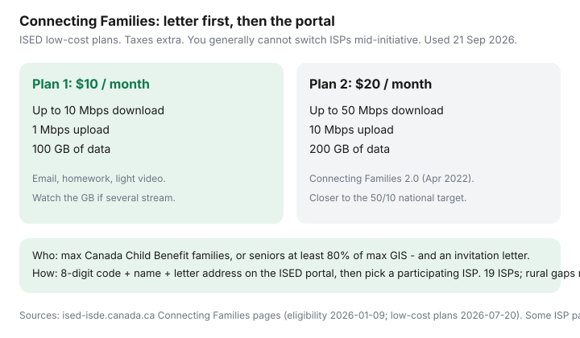

Internet · Canada
Connecting Families Initiative Explained: $10/$20 Internet, Eligibility, and How to Use Your Code
The Connecting Families Initiative is not a store coupon. It is a Government of Canada invitation program: Innovation, Science and Economic Development Canada (ISED) confirms eligibility from CCB or GIS data, mails a letter with an 8-digit code, and participating ISPs volunteer $10 and $20 plans without a federal subsidy on the monthly rate. Households miss it because the envelope looks like junk, or because they call Rogers and ask for “the $10 internet” without a code.
This walkthrough uses ISED pages used 21 Sep 2026. It is education, not an enrolment decision and not an ISP partnership. If you did not get a letter, you cannot self-declare onto the plan.
Disclosure: No affiliate offers on this page. We will not upsell debt relief, “guaranteed approval,” or a third-party who wants your SIN. If someone DMs you a Connecting Families code for sale, that is a scam. Official portal and 1-800-328-6189 / TTY 1-866-694-8389.
Key takeaways
- $10 + tax: up to 10 Mbps down, 1 Mbps up, 100 GB. $20 + tax: up to 50/10 Mbps, 200 GB (2.0, launched 1 Apr 2022).
- Eligibility categories: families on maximum Canada Child Benefit, or seniors on at least 80% of maximum GIS — and an invitation letter.
- Enrol on the Connecting Families registration portal with the code, full name, and the address printed on the letter (even if you have moved; update after).
- You generally cannot switch ISPs during the initiative except after a move their ISP does not serve. Choose coverage first.
- 19 voluntary ISPs; ISED says nearly 85% market coverage; rural gaps remain. Some ISP pages (e.g. Cogeco) say the initiative runs until March 2027 — re-verify.
What CFI and Connecting Families 2.0 offer (speeds and data)

Phase 1 (from November 2018) is the $10 / 10 Mbps / 100 GB package. Phase 2.0 added the $20 package to meet the 50/10 national target with 200 GB, and expanded eligibility to low-income seniors. These are not unlimited retail gigabit plans. A household of video-callers and 4K streamers can burn 200 GB. Ask the participating ISP which plan fits; ISED tells you they can help you choose.
Devices: the CFI landing page says those who qualify can also request a low-cost digital device, while supplies last. Treat that as inventory-limited, not a guarantee in 2026.
Eligibility: max CCB families and GIS seniors (invitation letter required)
ISED eligibility page (modified 9 Jan 2026):
- Families: receive the maximum Canada Child Benefit. CRA’s CCB calculator is the check, not a vibe.
- Seniors: receive at least 80% of the maximum Guaranteed Income Supplement (GIS estimator).
Eligibility is confirmed annually. Receiving a letter means you are eligible to sign up. Meeting the income category without a letter is not enough. Cogeco’s program page still describes “random selection” language for letters; ISED’s consumer pages emphasize that letter-holders have been evaluated. Do not fight a store clerk about income. Fight missing mail with ISED.
How the 8-digit access code and portal work
A valid letter (ISED invitation-letter page, modified 9 Jan 2026): Government of Canada logo, your home address, date (Month, Year), unique 8-digit code, subject “Connecting Families Initiative,” Service Canada or Government of Canada envelope. Photograph the code.
- Open the Connecting Families registration portal from ISED’s site.
- Enter the activation code, full name, and the letter address even if you moved.
- Confirm the information and continue enrolment.
- Near the end, participating ISPs that offer wired service in the region appear.
- Pick one, then contact that ISP with the code and ID to complete the $10 or $20 plan.
- Update the service address after registration if you have moved.
If you have no home internet yet, ISED points to libraries/community centres and Computers for Success Canada. CFSC call centre via YWCA Vancouver: 1-833-206-0599 for portal technical help.
Participating ISPs and coverage gaps (especially rural)
ISED’s list (landing page used 21 Sep 2026): Access Communications, Beanfield, Bell (including Bell Aliant and Bell MTS), Cogeco, CCAP, CSUR, Hay Communications, Mornington, Northwestel, Novus, Rally, Rogers, Rural Net, SaskTel, Tbaytel, TELUS, Vidéotron, Westman Media. ISED: 19 ISPs, nearly 85% of the internet market, volunteer-based, not all regions. If the portal shows no ISP, keep the letter — codes cannot be reissued, and more ISPs may join, especially rural.
Northwestel is on the list; many remote communities still will not see a wired option. That is a rural technology problem, not a failure to “negotiate” CFI.
You generally cannot switch ISPs mid-initiative — plan carefully
ISED low-cost-plans page (modified 20 Jul 2026): “You cannot change providers while participating in the initiative… The only time you can switch providers is if you move to a location where your current ISP does not provide service.”
So: check which names appear and whether they actually serve the suite, before you tap one. Support language, self-install vs tech, and whether 50/10 is realistic on that plant all matter. You will live with this ISP until you move or the initiative ends.
Already on a retail contract? ISED FAQ: you can still join if you have a letter, but “you may be required to pay the remaining value of that offer or contract.” See internet ETFs — CFI is not a magic waiver.
Devices offer (while supplies last) and timeline notes toward 2027
Ask the portal/ISP about the device offer at enrolment. “While supplies last” means do not delay a letter from 2024 until 2026 and assume a laptop is waiting. Cogeco’s public Connecting Families page states the initiative will run until March 2027. That is an ISP program-page date, not a substitute for ISED. If you are planning a 2027 move, re-read ISED before you assume $20 forever.
What to do if you qualify but never got a letter
- Confirm max CCB or 80%+ GIS with CRA/Service Canada tools.
- Search old mail, including after a move. ISED lists moves and discarded letters as the usual misses.
- Contact the Connecting Families Initiative team (ISED 1-800-328-6189 / TTY 1-866-694-8389). Lost letter: they tell you to contact the team rather than inventing a code.
- If the portal shows no ISP, keep the letter and code anyway.
- Do not pay a Facebook “agent” to register you.
Privacy: ISED says the CFI office does not receive lists of taxpayer names/addresses for the mail-out design, and ISPs do not get extra personal information beyond a normal internet contract — they are not the eligibility adjudicator. You still show ID and the code to the ISP.
Sources & date stamps
- ISED Connecting Families Initiative landing page — 19 ISPs, portal steps, 2.0 history, device offer, ~85% coverage FAQ (used 21 Sep 2026).
- ISED low-cost plans — $10 and $20 specs; no mid-initiative ISP switch except a move (modified 20 Jul 2026).
- ISED eligibility — max CCB; GIS ≥ 80% of maximum; letter required (modified 9 Jan 2026).
- ISED invitation letter — 8-digit code anatomy; lost-letter and move instructions (modified 9 Jan 2026).
- Cogeco Connecting Families page — March 2027 end-date note (ISP page; re-verify on ISED).
Frequently asked questions
I get the Canada Child Benefit. Can I just call Rogers for the $10 plan?
No. ISED is explicit: only households that received a Government of Canada / Service Canada invitation letter with an 8-digit code can enrol, and you start on the Connecting Families portal — not by asking a store for a secret SKU.
What are the two plan speeds?
Plan 1: $10/month plus tax, up to 10 Mbps down, 1 Mbps up, 100 GB. Plan 2: $20/month plus tax, up to 50/10 Mbps, 200 GB (Connecting Families 2.0, from 1 Apr 2022). ISED low-cost-plans page date-modified 20 Jul 2026.
Can I switch from Bell to Telus later if both participate?
Generally no. ISED: you must stay with the ISP you chose unless you move somewhere that ISP does not serve. Pick coverage and support carefully on day one.
What if I qualify but never got a letter?
Check CCB/GIS criteria, then contact the CFI team. Letters can be missed after a move or if mail was thrown out. Lost-code: ISED says contact the initiative — codes are unique. CFSC/YWCA help line cited on the CFI site: 1-833-206-0599. ISED: 1-800-328-6189 (TTY 1-866-694-8389).
Does this cover rural satellite?
Participating ISPs are voluntary and ISED says they cover nearly 85% of the market with 19 names listed — still with rural and remote gaps. Keep the letter; more ISPs can join. Starlink is a separate retail product, not CFI.